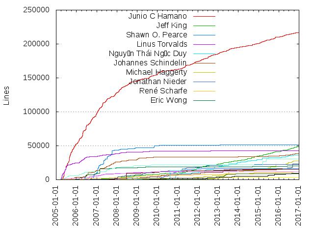
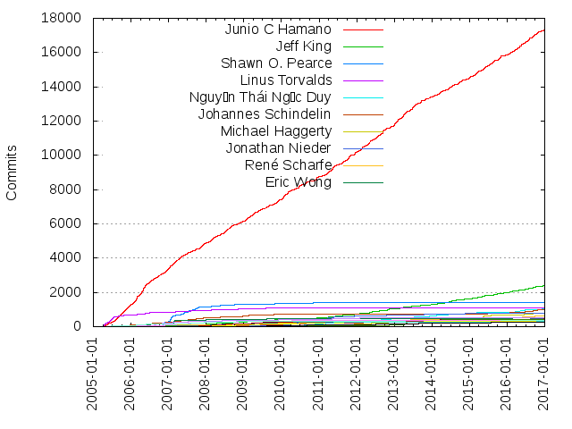

Authors
| Author | Commits (%) | + lines | - lines | First commit | Last commit | Age | Active days | # by commits |
|---|
| Junio C Hamano | 17334 (38.20%) | 216896 | 92261 | 2005-04-12 | 2016-12-28 | 4277 days, 2:13:34 | 2706 | 1 |
| Jeff King | 2377 (5.24%) | 48622 | 24160 | 2006-05-23 | 2016-12-17 | 3860 days, 14:15:37 | 840 | 2 |
| Shawn O. Pearce | 1401 (3.09%) | 51631 | 21617 | 2006-02-17 | 2016-02-14 | 3648 days, 18:13:18 | 346 | 3 |
| Linus Torvalds | 1113 (2.45%) | 42713 | 18323 | 2005-04-08 | 2016-10-12 | 4204 days, 20:32:45 | 389 | 4 |
| Nguyễn Thái Ngọc Duy | 1020 (2.25%) | 36223 | 13222 | 2006-10-19 | 2016-12-06 | 3701 days, 11:18:58 | 298 | 5 |
| Johannes Schindelin | 976 (2.15%) | 38253 | 11490 | 2005-07-28 | 2016-12-23 | 4165 days, 2:20:44 | 447 | 6 |
| Michael Haggerty | 779 (1.72%) | 27225 | 14103 | 2009-02-23 | 2016-09-05 | 2751 days, 4:36:43 | 116 | 7 |
| Jonathan Nieder | 765 (1.69%) | 22311 | 17631 | 2008-06-30 | 2016-09-10 | 2994 days, 1:26:09 | 278 | 8 |
| René Scharfe | 612 (1.35%) | 11500 | 7541 | 2005-04-29 | 2016-11-01 | 4204 days, 13:32:29 | 282 | 9 |
| Eric Wong | 533 (1.17%) | 20579 | 8950 | 2005-11-12 | 2016-12-11 | 4046 days, 14:41:13 | 269 | 10 |
| Jakub Narębski | 512 (1.13%) | 15652 | 7382 | 2006-06-17 | 2016-10-07 | 3765 days, 4:37:07 | 233 | 11 |
| Christian Couder | 464 (1.02%) | 23374 | 10467 | 2006-06-04 | 2016-10-23 | 3794 days, 16:40:47 | 180 | 12 |
| Johannes Sixt | 444 (0.98%) | 16414 | 6614 | 2006-11-13 | 2016-12-22 | 3691 days, 7:43:43 | 288 | 13 |
| Felipe Contreras | 415 (0.91%) | 8794 | 3409 | 2009-01-14 | 2016-05-18 | 2680 days, 20:03:16 | 94 | 14 |
| Nicolas Pitre | 346 (0.76%) | 11750 | 7237 | 2005-04-29 | 2016-07-06 | 4086 days, 1:51:46 | 178 | 15 |
| Paul Mackerras | 342 (0.75%) | 30545 | 18229 | 2005-04-23 | 2015-12-19 | 3891 days, 20:24:33 | 228 | 16 |
| Thomas Rast | 336 (0.74%) | 15547 | 4025 | 2008-06-26 | 2014-02-17 | 2061 days, 21:09:51 | 167 | 17 |
| Brandon Casey | 293 (0.65%) | 3268 | 1586 | 2007-03-20 | 2013-09-24 | 2379 days, 19:48:40 | 137 | 18 |
| Ævar Arnfjörð Bjarmason | 289 (0.64%) | 16707 | 7524 | 2010-04-06 | 2016-10-06 | 2375 days, 0:31:00 | 59 | 19 |
| Matthieu Moy | 282 (0.62%) | 9484 | 3674 | 2007-05-07 | 2016-10-21 | 3455 days, 12:08:29 | 153 | 20 |
These didn't make it to the top: Michael J Gruber, Jiang Xin, Simon Hausmann, Petr Baudis, Stefan Beller, Alex Riesen, Ramkumar Ramachandra, Elia Pinto, Eric Sunshine, Johan Herland, Ramsay Jones, Miklos Vajna, Daniel Barkalow, David Aguilar, SZEDER Gábor, J. Bruce Fields, John Keeping, Pete Wyckoff, Elijah Newren, Kay Sievers, Pierre Habouzit, Jens Lehmann, Stephen Boyd, Tay Ray Chuan, Ralf Thielow, Vasco Almeida, Paul Tan, Pat Thoyts, Karsten Blees, Alexandre Julliard, brian m. carlson, Martin von Zweigbergk, Clemens Buchacher, Giuseppe Bilotta, Avery Pennarun, Alexander Gavrilov, Torsten Bögershausen, Jay Soffian, Erik Faye-Lund, Fredrik Kuivinen, Ronnie Sahlberg, Nanako Shiraishi, Jim Meyering, Steffen Prohaska, Jon Seymour, Heiko Voigt, Frank Lichtenheld, David Turner, Gerrit Pape, Brian Gernhardt, Martin Langhoff, Lars Schneider, Peter Krefting, Jonas Fonseca, Markus Heidelberg, Karthik Nayak, Stephan Beyer, Mike Hommey, Matthias Lederhofer, Lars Hjemli, Bert Wesarg, Michele Ballabio, Matthias Urlichs, Kirill Smelkov, Nick Hengeveld, Martin Koegler, Christian Stimming, Sergey Vlasov, Andy Parkins, Trần Ngọc Quân, Ryan Anderson, Luke Diamand, Luben Tuikov, H. Peter Anvin, Sebastian Schuberth, Philip Oakley, Mark Levedahl, Charles Bailey, Thomas Ackermann, Santi Béjar, Pavel Roskin, Ben Walton, Adam Spiers, Alex Henrie, Sverre Rabbelier, Marius Storm-Olsen, Dmitry Potapov, W. Trevor King, Sven Verdoolaege, Sean Estabrooks, Jon Loeliger, Dan McGee, Sam Vilain, Uwe Kleine-König, Carlos Martín Nieto, Björn Gustavsson, Matthew Ogilvie, Lukas Sandström, Aneesh Kumar K.V, Wincent Colaiuta, Theodore Ts'o, Michael G. Schwern, Han-Wen Nienhuys, Zbigniew Jędrzejewski-Szmek, Patrick Steinhardt, Michał Kiedrowicz, Jacob Keller, David Barr, Kyle J. McKay, Jean-Noel Avila, Célestin Matte, Andreas Ericsson, Thomas Gummerer, Tanay Abhra, Dennis Stosberg, Stefano Lattarini, Ralf Wildenhues, David Kastrup, Antoine Pelisse, Julian Phillips, Yann Dirson, Timo Hirvonen, Martin Waitz, Ilari Liusvaara, Eric W. Biederman, Richard Hansen, Max Kirillov, Kevin Ballard, Björn Steinbrink, Paolo Bonzini, Michael S. Tsirkin, Kristian Høgsberg, Kjetil Barvik, Carlos Rica, Robin Rosenberg, Robert Fitzsimons, Michael Witten, Mark Lodato, Kevin Bracey, Jason Riedy, Andy Whitcroft, Alexander Shopov, Tim Henigan, Peter Eriksen, Karl Wiberg, Dmitry Ivankov, Anders Kaseorg, Vitor Antunes, Matthias Kestenholz, Josef Weidendorfer, Brad King, Mark Wooding, Lee Marlow, Josh Triplett, Jonathan Tan, Jari Aalto, Brian Downing, Adam Roben, Matt Kraai, Marc Branchaud, James Bowes, Adam Simpkins, Phil Hord, Nikolai Weibull, Lea Wiemann, Gustaf Hendeby, Andrew Ruder, Alexey Shumkin, Mark Rada, Gary V. Vaughan, Eygene Ryabinkin, David Rientjes, David Kågedal, Beat Bolli, Mike Ralphson, Lukas Fleischer, Florian Achleitner, David J. Mellor, David A. Greene, Brian Gesiak, YOKOTA Hiroshi, Vicent Marti, Sergei Organov, Chris Webb, Andrew Wong, Anand Kumria, Alexander Kuleshov, Yasushi SHOJI, Vincent van Ravesteijn, Steven Grimm, Robin H. Johnson, Nicolas Vigier, Heikki Orsila, Dmitry V. Levin, Dmitry S. Dolzhenko, Dimitriy Ryazantcev, David D. Kilzer, Chris Johnsen, Abhijit Menon-Sen, A Large Angry SCM, Tony Luck, Thiago Farina, Teemu Likonen, Remi Lespinet, Ray Chen, Quy Tonthat, Ping Yin, Olivier Marin, Max Horn, Jan Krüger, Dave Borowitz, Chris Rorvick, Carl Worth, Arjen Laarhoven, Pranit Bauva, Michael Schubert, Matt McCutchen, Kacper Kornet, Horst H. von Brand, David Greaves, Chris Packham, Brandon Williams, Bo Yang, Benoit Sigoure, Andreas Schwab, Anders Melchiorsen, Štěpán Němec, Yann Droneaud, Tarmigan Casebolt, Stefan Naewe, Robert Shearman, Namhyung Kim, Mehul Jain, Marco Costalba, Deskin Miller, Bryan Donlan, Allan Caffee, Wesley J. Landaker, Tony Finch, Tobias Klauser, Steven Walter, Pieter de Bie, Marcus Griep, Luiz Fernando N. Capitulino, Krzysztof Mazur, Joachim Schmitz, Fredrik Gustafsson, Franck Bui-Huu, David Symonds, Benjamin Kramer, Will Palmer, Todd Zullinger, Ted Pavlic, Stephen Haberman, Sitaram Chamarty, Simon Ruderich, Shawn Bohrer, Nazri Ramliy, Mikael Magnusson, Martin Erik Werner, Kazuki Yamaguchi, Jeff Hostetler, Frank Li, Florian Forster, Finn Arne Gangstad, Eyvind Bernhardsen, Dennis Kaarsemaker, Dana L. How, Chris Shoemaker, Brian Hetro, Benoit Person, Valentin Haenel, Thynson, Sven Strickroth, Steven Drake, Stefan Haller, Sasha Khapyorsky, Robert Schiele, Pat Notz, Pascal Obry, John 'Warthog9' Hawley, Jason St. John, Jared Hance, Jakub Suder, Greg Price, Francis Daly, Eric S. Raymond, Andreas Gruenbacher, Alp Toker, William Pursell, Tor Arvid Lund, Tommi Virtanen, Thomas Braun, Techlive Zheng, Sebastian Leske, Philippe Bruhat, Pavan Kumar Sunkara, Mike McCormack, Michael Rappazzo, Lucian Poston, Larry D'Anna, Jonathan del Strother, Joey Hess, Jean-Luc Herren, David Michael, Conrad Irwin, Chris Wright, Alexander Strasser, Alex Vandiver, Yakov Lerner, Yaacov Akiba Slama, Ville Skyttä, Torstein Hegge, Thomas Glanzmann, Stephen R. van den Berg, Serge E. Hallyn, Scott R Parish, Samuel Tardieu, Peter Hagervall, Michal Rokos, Michal Nazarewicz, Michael Hendricks, Martin Storsjö, Linus Arver, Kai Ruemmler, Jürgen Rühle, Jonathon Mah, Jeremiah Mahler, Jan H. Schönherr, James Bottomley, Greg Brockman, Gary Gibbons, Felipe Gonçalves Assis, Erick Mattos, David Reiss, Damien Diederen, Cheng Renquan, Changwoo Ryu, Bryan Larsen, Benoit Pierre, Alexander Potashev, martin f. krafft, YOSHIFUJI Hideaki, Tuomas Suutari, Tom Prince, Stephen P. Smith, Stefan-W. Hahn, Satoshi Yasushima, Santiago Torres, Richard Hartmann, Randal L. Schwartz, Peter Collingbourne, Pete Harlan, Nicolas Sebrecht, Michal Sojka, Michael Spang, Michael Coleman, Marc Khouzam, Lars Noschinski, Kirill A. Shutemov, Keith Cascio, Joshua Jensen, John Szakmeister, James Denholm, Ingo Molnar, Ilya Bobyr, Erik Elfström, Eric Raible, Edgar Toernig, Don Zickus, David M. Syzdek, Brad Roberts, Bernhard R. Link, Ben Jackson, Andi Kleen, Amos Waterland, Adeodato Simó, Adam Brewster, Aaron Schrab, jidanni@jidanni.org, Vitaly "_Vi" Shukela, Stephan Feder, Simon 'corecode' Schubert, Sebastian Götte, Roman Kagan, Phillip Sz, Philip Jägenstedt, Ondřej Bílka, Neil Horman, Michael Lukashov, Mark Hills, Marco Roeland, Marcel M. Cary, Marat Radchenko, Lucien Kong, Knut Franke, John Tapsell, Holger Weiß, Henrik Grubbström, Grégoire Barbier, Fernando J. Pereda, Eduardo R. D'Avila, David Soria Parra, Bernhard Reiter, Ask Bjørn Hansen, Andrew Myrick, Дилян Палаузов, Øyvind A. Holm, anonymous, Zoltan Klinger, Xiaolong Ye, Victor Leschuk, Tuncer Ayaz, Tommy M. McGuire, Tom Russello, Takashi Iwai, Sébastien Guimmara, Sylvain Rabot, Steve Hoelzer, Steve Haslam, Stefan Sperling, Slavomir Vlcek, Simon Oosthoek, Scott Chacon, Samuel Bronson, Sam Hocevar, Richard Quirk, Rafael Garcia-Suarez, Piotr Krukowiecki, Peter Baumann, Paolo Ciarrocchi, Ori Avtalion, Orgad Shaneh, Nelson Elhage, Mike Pape, Mike Crowe, Michael W. Olson, Michael Loeffler, Matthijs Kooijman, Mathias Lafeldt, Masanari Iida, Mark Burton, Marcel Koeppen, Krzesimir Nowak, Kristoffer Haugsbakk, Kevin Willford, Kevin Geiss, Kevin Daudt, Keshav Kini, Justin Lebar, Josh England, Jorge Juan Garcia Garcia, Joe Perches, Jeremy White, Jens Lindström, Jeff Muizelaar, Jan Harkes, Ivan Todoroski, Igor Mironov, Huynh Khoi Nguyen Nguyen, Guillaume Sasdy, Guillaume Pagès, Guanqun Lu, Fredrik Medley, Fraser Tweedale, Florian Weimer, Federico Mena Quintero, Fabian Ruch, Fabian Emmes, Eric Blake, Emil Medve, Edward Thomson, Doug Kelly, Dirk Süsserott, Davide Libenzi, Dave Olszewski, Dale R. Worley, Clément Poulain, Christian Meder, Christian Hesse, Chris Frey, Brian Norris, Boyd Stephen Smith Jr, Armin Kunaschik, Antoine Delaite, Andrew Pimlott, Alejandro R. Sedeño, Alecs King, Albert L. Lash, IV, İsmail Dönmez, Øystein Walle, Zach Welch, Yi EungJun, Xavier Maillard, Wieland Hoffmann, Väinö Järvelä, Trent Piepho, Tor Arne Vestbø, Tom Grennan, Tom G. Christensen, Tilman Sauerbeck, Theo Niessink, Teemu Matilainen, Ted Zlatanov, Sun He, Stepan Kasal, Stefan Zager, Stefan Saasen, Spencer E. Olson, Simon Arlott, Sergey Organov, Sebastien Cevey, Rüdiger Sonderfeld, Rutger Nijlunsing, Ross Lagerwall, Roberto Tyley, Robert Zeh, Reuben Hawkins, Remi Pommarel, Peter Valdemar Mørch, Peter Oberndorfer, Pelle Wessman, Paul Gortmaker, Paul Bolle, Patrick Mauritz, Pang Yan Han, Nicolas Morey-Chaisemartin, Nick Stokoe, Nick Alcock, Mika Fischer, Michal Privoznik, Michal Ostrowski, Maxim Bublis, Matthew Daley, Martyn Smith, Markus Duft, Mark Allen, Marcus Karlsson, Marco Sousa, Marc-André Lureau, Liu Yubao, Libor Pechacek, Lawrence Mitchell, Lars R. Damerow, Kalle Valo, Jürgen Kreileder, Jörg Sommer, Josh Micich, Jonas 'Sortie' Termansen, Jon Griffiths, Johannes Gilger, Jim Radford, Jim Hill, Jason McMullan, Jan Hudec, Jake Goulding, Jacob Helwig, Jack Nagel, Ingo Brückl, Ian Ward Comfort, Holger Eitzenberger, H. Merijn Brand, Galan Rémi, Frédéric Heitzmann, Fredrik Skolmli, Eric Hanchrow, Emmanuel Trillaud, Dusty Phillips, Dustin Sallings, David Woodhouse, David Brown, Danny Lin, Daniel Knittl-Frank, Csaba Henk, Cord Seele, Christophe Simonis, Chris Pettitt, Bruno Ribas, Brian Henderson, Bernt Hansen, Axel Bonnet, Antonio Ospite, André Goddard Rosa, Alexei Sholik, Alan Chandler, Adam Dinwoodie, Роман Донченко, maximilian attems, Yuxuan Shui, Yiannis Marangos, YONETANI Tomokazu, Xue Fuqiao, Xudong Guan, Win Treese, Willy Tarreau, Vivien Didelot, Vineet Kumar, Vikrant Varma, Vietor Liu, Uwe Zeisberger, Uwe Storbeck, Tommy Thorn, Tom Preston-Werner, Tom Miller, Toby Allsopp, Tim Stoakes, Thorsten Glaser, Thomas Schwinge, Thomas Quinot, Thomas Matysik, Thomas Jarosch, Thadeu Lima de Souza Cascardo, Ted Percival, Tadeusz Andrzej Kadłubowski, Stephen Rothwell, Stelian Pop, Stefan Karpinski, Skip, Simon Sasburg, Simo Melenius, Seth Falcon, Sebastian Pipping, Sebastian Noack, Scott Lamb, Schalk, Ken, Salikh Zakirov, Rémi Vanicat, Ronald Wampler, Romain Francoise, Robert Luberda, Richard P. Curnow, Remi Rampin, Rasmus Villemoes, Raphael Zimmerer, Ralf Baechle, Raja R Harinath, Rafael Gieschke, Philipp A. Hartmann, Petr Onderka, Petr Kodl, Peter van der Does, Peter Harris, Peter Eisentraut, Peter Colberg, Pekka Kaitaniemi, Paul Wagland, Paul Serice, Paul Collins, Patrick Welche, Patrick Reynolds, Patrick Higgins, Parker Moore, Paolo 'Blaisorblade' Giarrusso, Oswald Buddenhagen, Olaf Hering, OGAWA Hirofumi, Nick Edelen, Nelson Benitez Leon, Nathan W. Panike, NGUYEN Kim Thuat, Mårten Kongstad, Mizar, Mike Gorchak, Mike Dalessio, Michał Górny, Michal Marek, Michael Wookey, Michael Smith, Michael Krelin, Michael Heemskerk, Michael Ellerman, Maxime Coste, Mattias Nissler, Matthijs Melchior, Matthias Ruester, Matt Graham, Matt Draisey, Mathieu Lienard--Mayor, Martin Mares, Marten Svanfeldt (dev), Mark Drago, Marios Titas, Marco Paolone, Manlio Perillo, Luis Henriques, Li Yang, Lars Vogel, Kirill A. Korinskiy, Kevin P. Fleming, Kevin Leung, Kevin Cernekee, Keith Packard, Kazutoshi Satoda, Kazuki Saitoh, Kato Kazuyoshi, Justin Frankel, Jonathan "Duke" Leto, Jon Jensen, John Chapman, Joe Ratterman, Joachim Berdal Haga, Jing Xue, Jesse Greenwald, Jens Axboe, Jehan Bing, Jeffrey C. Ollie, Jeff Epler, Jean-Noël AVILA, Jason Merrill, Jan Durovec, James Y Knight, Jakob Stoklund Olesen, Jakob Pfender, Jaime Soriano Pastor, Jacopo Notarstefano, Jacob Nisnevich, Ingmar Vanhassel, Imre Deak, Ian Kelling, Hitoshi Mitake, Henrik Austad, Guillermo S. Romero, Guido Ostkamp, Greg KH, Greg Bacon, Gisle Aas, Geoffrey Thomas, Geoffrey Irving, Geert Bosch, Garry Dolley, Gabriel Souza Franco, Gabriel Corona, Frederik Schwarzer, Francis Moreau, Florian Ragwitz, Florian La Roche, Ferry Huberts, Etienne Buira, Eric Kidd, Emilio G. Cota, Emil Sit, Eli Barzilay, Edmundo Carmona Antoranz, Drew Northup, Dotan Barak, Dmitry Marakasov, Dirk Wallenstein, Diane Gasselin, David S. Miller, David Fries, Dave Dulson, Daniel Trstenjak, Daniel Lowe, Daniel Graña, Daniel Cheng (aka SDiZ), Daniel A. Steffen, Dan Sabath, Dan Johnson, Clifford Caoile, Ciaran McCreesh, Christopher Tiwald, Christopher Li, Christoph Junghans, Christian Schlotter, Christian Himpel, Cesar Eduardo Barros, Catalin Marinas, Carlo Marcelo Arenas Belon, Caio Marcelo de Oliveira Filho, Byrial Jensen, Bryan Jacobs, Brian Harring, Brian Ewins, Brian Bourn, Bradford C. Smith, Boyd Lynn Gerber, Bobby Powers, Blake Burkhart, Björn Engelmann, Bill Lear, Ben Wijen, Ben North, Bart Trojanowski, Avi Kivity, Audric Schiltknecht, Atousa Pahlevan Duprat, Astril Hayato, Ariel Badichi, Anton Gyllenberg, Anton Altaparmakov, Andrew Sayers, Andreas Krey, Andreas Gal, Andre Noll, Amos King, Amiel Martin, Ali Gholami Rudi, Alfred Perlstein, Alexey Nezhdanov, Alexey Borzenkov, Alexandre Erwin Ittner, Alexandre Bourget, Alexander Sulfrian, Alexander Litvinov, Alex Neronskiy, Alex Bennée, Alec Berryman, Alberto Bertogli, Adrian Weimann, Adrian Johnson, Adam Tkac, Adam Monsen, 마누엘, 张忠山, Андрей Рыбак, Élie Bouttier, yaras, ws3389, veillette@yahoo.ca, lin zuojian, knittl, kTln2, josh robb, jfbu, jcb91, eric miao, dequis, bert Dvornik, Zoltán Füzesi, Zoë Blade, Zhang Le, Zack Brown, Younes Khoudli, Yichao Yu, Yggy King, Yacine Belkadi, Yaakov Selkowitz, Xidorn Quan, Wu Fengguang, William Giokas, William Entriken, William Duclot, Wilhelm Schuermann, Wilhansen Li, Wei-Yin Chen (陳威尹), Wayne Walter, Wang Sheng, Waldek Maleska, Vlad Dogaru, Vitaly _Vi Shukela, Vitaliy Ivanov, Vinicius Kursancew, Vincent Zanotti, Veres Lajos, Vegard Nossum, Vasyl' Vavrychuk, Vasily Makarov, Ulrik Sverdrup, Ulrich Windl, Ulrich Dangel, Uli Heller, Tzvetan Mikov, Twiinz, Torsten Schmutzler, Tor Arntsen, Tony Kemp, Tommi Kyntola, Tomash Brechko, Tomas Carnecky, Tom Jones, Tom Clarke, Tolga Ceylan, Tobias Ulmer, Tobias Schulte, Timotheus Pokorra, Timo Sirainen, Tilman Vogel, Thomas Zander, Thomas Schneider, Thomas Hochstein, Thomas Harning, Thomas Guyot-Sionnest, Thomas Cort, Thomas Badie, Thomas Arcila, Theodore Leblond, Tero Roponen, Terje Sten Bjerkseth, Tair Sabirgaliev, Sébastien Loriot, Sverre Hvammen Johansen, Sven van Haastregt, Sven Eckelmann, Sveinung Kvilhaugsvik, Sup Yut Sum, SungHyun Nam, StephenB, Stephan Springl, Stefan Christ, Stefan Agner, Stanislav Kolotinskiy, Soeren Finster, Slava Kardakov, Simon Cathebras, Simon A. Eugster, Sidhant Sharma [:tk], Sidhant Sharma, Shin Kojima, Sergey Senozhatsky, Serge van den Boom, Serge Ziryukin, Sebastien Helleu, Sebastian Staudt, Sebastian Morr, Sebastian Kuzminsky, Scott J. Goldman, Scott Collins, Saurav Sachidanand, Santiago Gala, Sandy Carter, Sandor Bodo-Merle, Sami Farin, Sam Ravnborg, Ryuichi Kokubo, Russell Myers, Ruben Kerkhof, Roy Lee, RomanBelinsky, Romain Picard, Roland Mas, Roland Dreier, Rohit Mani, Rogan Dawes, Roel Kluin, Rodrigo Silva (MestreLion), Rocco Rutte, Robert de Bath, Robert Watson, Robert Suetterlin, Robert Ewald, Robert Boone, Robert Blum, Rob Mayoff, Riku, Richard Weinberger, Richard MUSIL, Richard Lowe, Richard Hubbell, Richard Fearn, René Nyffenegger, Renee Margaret McConahy, Rene Bredlau, Reilly Grant, Reece H. Dunn, Ray Zhang, Ray Donnelly, Raphael Kubo da Costa, Randy Dunlap, Raman Gupta, Rainer M. Canavan, R. Tyler Ballance, Quentin Neill, Qingning Huo, Pini Reznik, Pierre le Riche, Pickens, James E, Phil Pennock, Phil Miller, Phil Lawrence, Petr Stodulka, Peter van Zetten, Peter Wu, Peter Stuge, Peter Hutterer, Per Cederqvist, Pedro Melo, Pavel Volek, Pauli Virtanen, Paul Walmsley, Paul Talacko, Paul T Darga, Paul Smith, Paul Price, Paul Oliver, Paul Jarc, Paul Jakma, Paul Fox, Paul Eggert, Patrick Palka, Pasha Bolokhov, Panagiotis Issaris, Panagiotis Astithas, Pal-Kristian Engstad, Pablo Santiago Blum de Aguiar, P. Christeas, Ossi Herrala, Oren Held, Onno Kortmann, Oded Shimon, Noam Postavsky, Nikolaus Schulz, Nikolaj Schumacher, Nikola Forró, Nicolas Kaiser, Nicolas Dermine, Nico -telmich- Schottelius, Nickolai Zeldovich, Nick Townsend, Neil Roberts, Nathaniel W Filardo, Nathan Gray, Nate Case, Nasser Grainawi, Márcio Almada, Mukund, Monard Vong, Modestas Vainius, Mischa POSLAWSKY, Miles Bader, Miklós Fazekas, Mikko Rapeli, Mike Lundy, Mike Edgar, Mika Kukkonen, Mihai Capotă, Miguel Torroja, Michal Vitecek, Michael Weber, Michael Stefaniuc, Michael Stapelberg, Michael Stahl, Michael Prokop, Michael Procter, Michael Poole, Michael Palimaka, Michael Naumov, Michael Milligan, Michael Lutz, Michael Lai, Michael J. Kiwala, Michael Horowitz, Michael Gebetsroither, Michael Dressel, Michael Contreras, Michael Barabanov, Maxin john, Max Nanasy, Maurício C Antunes, Matthieu Prat, Matthieu Castet, Matthias Rüster, Matthias Krüger, Matthias Andree, Matthew Wilcox, Matthew Kraai, Matthew Chen, Mathias Megyei, Masatake Osanai, Martin von Gagern, Martin Stenberg, Martin Sivak, Martin Renold, Martin Nordholts, Martin Atukunda, Martin Amdisen, Markus Amsler, Mark Szepieniec, Mark Hollomon, Marek Zawirski, Marcus Fritzsch, Marcus Comstedt, Marco Nelissen, Marcin Owsiany, Mantas Mikulėnas, Mads Dørup, Lénaïc Huard, Luke Mewburn, Luke Lu, Luka Perkov, Luis Ressel, Luis R. Rodriguez, Ludwig Nussel, Luciano Rocha, Luc Heinrich, Liu Yuan, Li Peng, Li Hong, Lex Spoon, Leila Muhtasib, Leif Arne Storset, Lee Carver, Lawrence Velázquez, Lawrence Siebert, Laurent Arnoud, Laszlo Papp, Lars Knoll, Lars Kellogg-Stedman, Lars Gullik Bjønnes, Lars Doelle, LE Manh Cuong, Kumar Gala, Krzysztof Kowalczyk, Kristof Provost, Kristian Amlie, Kris Shannon, Konstantin V. Arkhipov, Kirill Brilliantov, Kirill, Kevin McConnell, Kevin Green, Kent Engstrom, Kenichi Saita, Ken Dreyer, Keller Fuchs, Keith McGuigan, Karthik R, Jörn Engel, Jérôme Zago, Jyotirmoy Bhattacharya, Justin Guenther, Junichi Uekawa, Julien Muchembled, Julien Danjou, Julien Carsique, Julian Gindi, Juerg Haefliger, João Britto, João Abecasis, Joshua Williams, Joshua Clayton, Josh Stone, Josh Elsasser, Josef Kufner, Jose F. Morales, Jordan DE GEA, Jonathan McCrohan, Jonas Flodén, John Yani, John Murphy, John Marshall, John Koleszar, John J. Franey, John Goerzen, John Ellson, Johannes Berg, Johan Sageryd, Joerg Bornemann, Joe English, Joe Cridge, Jochen Voss, Joan Perals, Joakim Tjernlund, Jindrich Makovicka, Jimmy Angelakos, Jharrod LaFon, Jess Austin, Jesper L. Nielsen, Jeremy Huddleston, Jeremie Nikaes, Jerald Fitzjerald, Jelmer Vernooij, Jeff Lasslett, Jeff Hobbs, Jeff Garzik, Jean-Noël Avila, Jean-Jacques Lafay, Jean Privat, Javier Roucher Iglesias, Jason Evans, Janos Laube, Jan Viktorin, Jan Veldeman, Jan Stępień, Jan Pešta, Jan Andres, Jamis Buck, James P. Howard, II, James McCoy, Jacob Sarvis, Jack Bates, Jacek Konieczny, J Smith, Iñaki Arenaza, Ivan Ukhov, Ivan Stankovic, Ismael Luceno, Irina Riesen, Imran M Yousuf, Ian Wienand, Ian McLean, Ian Liu Rodrigues, Ian Katz, Ian Hilt, Huw Davies, Hunter, D. Seth, Hui Wang, Hiroyuki Sano, Hiroshige Umino, Herbert Xu, Herbert Valerio Riedel, Henri GEIST, Hemmo Nieminen, Heiko Becker, Hartmut Henkel, Harry Jeffery, Harri Ilari Tapio Liusvaara, Han Boetes, Haitao Li, Haavard Skinnemoen, GyuYong Jung, Guy Rouillier, Gunnlaugur Þór Briem, Grégoire Paris, Greg Louis, Greg Jacobson, Grahack, Govind Salinas, Gordon Hopper, Glenn Rempe, Giuseppe Scrivano, Giovanni Funchal, George Vanburgh, Gavin Lambert, Gauthier Östervall, Gabriele Mazzotta, Gabriel Filion, Gabor Bernat, GIRARD Etienne, Frédéric Brière, Frederick Akalin, Fred Maranhão, Frans Klaver, Frank Sorenson, Francesco Pretto, Flavio Poletti, Filippo Negroni, Filipe Cabecinhas, Felix Gruber, Federico Cuello, Fabrizio Chiarello, Fabio Porcedda, Fabian Keil, Fabian Franz, Evan Powers, Eugene Letuchy, Erwan Mathoniere, Erik Broes, Eric Raymond, Eric N. Vander Weele, Ephrim Khong, Enrique Tobis, Enrico Scholz, Emily Xie, Elvis Pranskevichus, Elrond, Eli Collins, Edward Z. Yang, Ed Maste, Dévai Tamás, Dylan Smith, Dylan Reid, Dylan Alex Simon, Duncan Brown, Douglas Stockwell, Doug Maxey, Doug Bell, Dongcan Jiang, Dmitry Statyvka, Dmitry Kakurin, Dirk Hoerner, Dima Sharov, Diego Elio Pettenò, Dickson Wong, Devin Doucette, Dejan Ribič, David Tran, David Steven Tweed, David Sharp, David Ripton, David Meybohm, David Gould, David Glasser, David Engster, David Caldwell, David Bryson, David A. Wheeler, Dave Zarzycki, Dave Williams, Dave Watson, Dave Ware, Dave Peticolas, Dave O'Neill, Dave Nicolson, Darrin Thompson, Danijel Tasov, Daniele Segato, Daniel Drake, Daniel Cordero, Dan Zwell, Dan Wyand, Dan Nicholson, Dan Loewenherz, Dan Holmsand, Dan Hensgen, Dan Bornstein, Dan Aloni, Dan Albert, Dale Worley, Dair Grant, D Waitzman, Csaba Kiraly, Cristian Peraferrer, Crestez Dan Leonard, Cole Stanfield, Colby Ranger, Cody A Taylor, Cliff Frey, Ciaran Jessup, Christopher Wilson, Christopher Layne, Christopher Beelby, Christoph Mallon, Christoph J. Thompson, Christoph Hoopmann, Christoph Egger, Christoffer Pettersson, Christof Krüger, Christian Neukirchen, Christian Jaeger, Christian Helmuth, Christian Hammerl, Christian Engwer, Christian Biesinger, Chris Wedgwood, Chris Riddoch, Chris Ridd, Chris Parsons, Chris Hiestand, Chris Angelico, Charles McGarvey, Cezary Zawadka, Carlos R. Mafra, Carlos Manuel Duclos Vergara, CJ van den Berg, Bryan Drewery, Brodie Rao, Brice Lambson, Brian Gianforcaro, Brian Gerst, Brian Degenhardt, Brian Collins, Brett Randall, Boris Faure, Boris Byk, Bob Proulx, Blake Ramsdell, Blair Holloway, Bill Pemberton, Bernd Ahlers, Benoit Bourbie, Benny Siegert, Benjamin Sergeant, Benjamin Kerensa, Benjamin Dopplinger, Benjamin C Meyer, Benedikt Heine, Ben Woosley, Ben Clifford, Ben Boeckel, Barry Wardell, Avishay Lavie, Aurelien Bompard, Aske Olsson, Asheesh Laroia, Arto Jonsson, Art Haas, Arnout Engelen, Arnaud Fontaine, Arlen Cuss, Arjun Sreedharan, Ariel Faigon, Antonin, Antoine Queru, Anthony Ramine, Anthony Baire, Anselm Kruis, Angus Hammond, Andy Spencer, Andrzej K. Haczewski, Andrew Wheeler, Andrew Waters, Andrew Oakley, Andrew Keller, Andrew Garber, Andrew Clausen, Andrej E Baranov, Andreas Köhler, Andreas Färber, Andreas Brauchli, Anders Waldenborg, Anders Granskogen Bjørnstad, Ammon Riley, Amit Bakshi, Aman Gupta, Allen Hubbe, Alexey Mahotkin, Alexey Guzeev, Alexandru Juncu, Alexandre Vassalotti, Alexander Rinass, Alexander Hirsch, Alexander Gladysh, Alex Zepeda, Alex Merry, Aleksi Aalto, Aleksey Vasenev, Aleksander Boruch-Gruszecki, Alejandro Riveira Fernández, Alejandro Mery, Albert Yale, Alan Raison, Alan Davies, Adam Williamson, Adam Piątyszek, Adam Butcher, Adam, Abhijit Bhopatkar, Abbaad Haider, Aaron M Watson, Aaron Crane
Only top 20 authors shown
Only top 20 authors shown
| Month | Author | Commits (%) | Next top 5 | Number of authors |
|---|
| 2016-12 | Junio C Hamano | 83 (43.23% of 192) | Jeff King, Vasco Almeida, Lars Schneider, David Aguilar, Beat Bolli | 29 |
| 2016-11 | Junio C Hamano | 66 (45.52% of 145) | Jiang Xin, Jeff King, Nguyễn Thái Ngọc Duy, Jonathan Tan, Johannes Schindelin | 32 |
| 2016-10 | Junio C Hamano | 142 (42.51% of 334) | Jeff King, Johannes Schindelin, Pat Thoyts, Lars Schneider, René Scharfe | 36 |
| 2016-09 | Junio C Hamano | 167 (39.11% of 427) | Jeff King, Michael Haggerty, René Scharfe, Johannes Schindelin, brian m. carlson | 36 |
| 2016-08 | Junio C Hamano | 141 (44.06% of 320) | Jeff King, Christian Couder, Johannes Schindelin, Stefan Beller, René Scharfe | 37 |
| 2016-07 | Junio C Hamano | 159 (47.60% of 334) | Jeff King, Johannes Schindelin, Nguyễn Thái Ngọc Duy, Eric Wong, Stefan Beller | 31 |
| 2016-06 | Junio C Hamano | 87 (24.65% of 353) | Nguyễn Thái Ngọc Duy, Jeff King, Vasco Almeida, Johannes Schindelin, Michael Haggerty | 49 |
| 2016-05 | Junio C Hamano | 169 (43.11% of 392) | Nguyễn Thái Ngọc Duy, Christian Couder, Jeff King, Vasco Almeida, René Scharfe | 41 |
| 2016-04 | Junio C Hamano | 150 (43.99% of 341) | Michael Haggerty, Stefan Beller, Jeff King, Nguyễn Thái Ngọc Duy, Vasco Almeida | 36 |
| 2016-03 | Junio C Hamano | 91 (36.84% of 247) | Stefan Beller, Jeff King, Jiang Xin, Ralf Thielow, Eric Sunshine | 47 |
| 2016-02 | Junio C Hamano | 132 (42.04% of 314) | Jeff King, Patrick Steinhardt, Matthieu Moy, Nguyễn Thái Ngọc Duy, Karthik Nayak | 38 |
| 2016-01 | Junio C Hamano | 64 (26.02% of 246) | Elia Pinto, Johannes Schindelin, Jeff King, Christian Couder, Thomas Gummerer | 39 |
| 2015-12 | Junio C Hamano | 73 (32.02% of 228) | Elia Pinto, Jeff King, Jiang Xin, Stefan Beller, Nguyễn Thái Ngọc Duy | 36 |
| 2015-11 | Junio C Hamano | 47 (29.38% of 160) | René Scharfe, brian m. carlson, Jeff King, Techlive Zheng, Johannes Sixt | 40 |
| 2015-10 | Junio C Hamano | 185 (67.03% of 276) | YOKOTA Hiroshi, Johannes Schindelin, Jeff King, Tobias Klauser, Michael Rappazzo | 36 |
| 2015-09 | Junio C Hamano | 101 (33.01% of 306) | Jeff King, Karthik Nayak, John Keeping, Lars Schneider, Nguyễn Thái Ngọc Duy | 39 |
| 2015-08 | Junio C Hamano | 136 (42.24% of 322) | Paul Tan, Jeff King, Michael Haggerty, Dave Borowitz, Ray Chen | 37 |
| 2015-07 | Junio C Hamano | 96 (37.65% of 255) | Eric Sunshine, David Turner, Paul Tan, Karthik Nayak, Michael Haggerty | 38 |
| 2015-06 | Junio C Hamano | 137 (38.48% of 356) | Paul Tan, Michael Haggerty, Jeff King, Johannes Schindelin, Eric Sunshine | 41 |
| 2015-05 | Junio C Hamano | 135 (36.78% of 367) | Michael Haggerty, Jeff King, Paul Tan, Stefan Beller, SZEDER Gábor | 35 |
| 2015-04 | Junio C Hamano | 76 (43.68% of 174) | Jeff King, Michael Haggerty, Matthieu Moy, Jiang Xin, Torsten Bögershausen | 39 |
| 2015-03 | Junio C Hamano | 175 (45.93% of 381) | Jeff King, Nguyễn Thái Ngọc Duy, Stefan Beller, brian m. carlson, Michael J Gruber | 46 |
| 2015-02 | Junio C Hamano | 91 (58.33% of 156) | Jeff King, Michael Haggerty, René Scharfe, Torsten Bögershausen, Nguyễn Thái Ngọc Duy | 26 |
| 2015-01 | Junio C Hamano | 98 (46.01% of 213) | Jeff King, Jiang Xin, Stefan Beller, Alexander Kuleshov, Kyle J. McKay | 41 |
| 2014-12 | Junio C Hamano | 103 (48.58% of 212) | Michael Haggerty, Jeff King, Eric Sunshine, Johannes Schindelin, René Scharfe | 32 |
| 2014-11 | Junio C Hamano | 47 (23.04% of 204) | Nguyễn Thái Ngọc Duy, Jeff King, Michael Haggerty, Johan Herland, Jiang Xin | 48 |
| 2014-10 | Junio C Hamano | 87 (33.98% of 256) | Michael Haggerty, Jeff King, René Scharfe, David Aguilar, Eric Wong | 30 |
| 2014-09 | Junio C Hamano | 147 (66.82% of 220) | Jeff King, René Scharfe, Stefan Beller, Johannes Schindelin, David Aguilar | 27 |
| 2014-08 | Junio C Hamano | 37 (19.07% of 194) | Jeff King, Tanay Abhra, Nguyễn Thái Ngọc Duy, René Scharfe, Stefan Beller | 37 |
| 2014-07 | Junio C Hamano | 113 (38.44% of 294) | Jeff King, Karsten Blees, René Scharfe, Christian Couder, David Turner | 30 |
| 2014-06 | Junio C Hamano | 172 (45.14% of 381) | Jeff King, Nguyễn Thái Ngọc Duy, Ronnie Sahlberg, Elia Pinto, Jens Lehmann | 33 |
| 2014-05 | Junio C Hamano | 60 (30.00% of 200) | Jeff King, Elia Pinto, Ronnie Sahlberg, Brian Gesiak, James Denholm | 43 |
| 2014-04 | Junio C Hamano | 83 (29.23% of 284) | Elia Pinto, Michael Haggerty, Felipe Contreras, Ronnie Sahlberg, Jeff King | 41 |
| 2014-03 | Junio C Hamano | 125 (45.62% of 274) | Jeff King, Dmitry S. Dolzhenko, René Scharfe, Johannes Sixt, Michael Haggerty | 49 |
| 2014-02 | Junio C Hamano | 60 (31.75% of 189) | Nguyễn Thái Ngọc Duy, Kirill Smelkov, Jeff King, Nicolas Vigier, Michael Haggerty | 41 |
| 2014-01 | Junio C Hamano | 90 (34.88% of 258) | Jeff King, Michael Haggerty, Nguyễn Thái Ngọc Duy, Pete Wyckoff, Elia Pinto | 45 |
| 2013-12 | Junio C Hamano | 94 (41.78% of 225) | Nguyễn Thái Ngọc Duy, Jeff King, Christian Couder, Felipe Contreras, Vicent Marti | 30 |
| 2013-11 | Junio C Hamano | 59 (34.50% of 171) | Karsten Blees, Jonathan Nieder, Thomas Rast, Richard Hansen, Torsten Bögershausen | 29 |
| 2013-10 | Junio C Hamano | 80 (35.56% of 225) | Michael Haggerty, Jeff King, Felipe Contreras, Jonathan Nieder, Ramsay Jones | 37 |
| 2013-09 | Junio C Hamano | 138 (43.67% of 316) | Jeff King, Jonathan Nieder, Brandon Casey, Matthieu Moy, Richard Hansen | 44 |
| 2013-08 | Junio C Hamano | 69 (29.24% of 236) | Eric Sunshine, Felipe Contreras, Stefan Beller, Thomas Ackermann, Nguyễn Thái Ngọc Duy | 48 |
| 2013-07 | Junio C Hamano | 205 (44.96% of 456) | Nguyễn Thái Ngọc Duy, Eric Sunshine, Jeff King, Stefan Beller, Thomas Rast | 53 |
| 2013-06 | Junio C Hamano | 171 (39.31% of 435) | Ramkumar Ramachandra, Célestin Matte, John Keeping, Jiang Xin, Jeff King | 47 |
| 2013-05 | Felipe Contreras | 134 (39.64% of 338) | Junio C Hamano, Michael Haggerty, Ramkumar Ramachandra, Kevin Bracey, René Scharfe | 48 |
| 2013-04 | Junio C Hamano | 233 (38.20% of 610) | Felipe Contreras, Michael Haggerty, Jeff King, Ramkumar Ramachandra, John Keeping | 56 |
| 2013-03 | Junio C Hamano | 150 (47.17% of 318) | Jeff King, Thomas Rast, John Keeping, Yann Droneaud, Nguyễn Thái Ngọc Duy | 50 |
| 2013-02 | Junio C Hamano | 146 (43.71% of 334) | David Aguilar, Jeff King, W. Trevor King, Brandon Casey, Nguyễn Thái Ngọc Duy | 46 |
| 2013-01 | Junio C Hamano | 253 (50.00% of 506) | Pete Wyckoff, Nguyễn Thái Ngọc Duy, John Keeping, Martin von Zweigbergk, Jeff King | 54 |
| 2012-12 | Junio C Hamano | 90 (42.65% of 211) | Jeff King, Adam Spiers, Torsten Bögershausen, Erik Faye-Lund, Thomas Ackermann | 38 |
| 2012-11 | Junio C Hamano | 108 (35.64% of 303) | Felipe Contreras, Jeff King, Michael Haggerty, Ramkumar Ramachandra, Sebastian Leske | 35 |
| 2012-10 | Junio C Hamano | 80 (27.87% of 287) | Jeff King, Nguyễn Thái Ngọc Duy, Matthew Ogilvie, Michael Haggerty, Jonathan Nieder | 46 |
| 2012-09 | Junio C Hamano | 216 (54.27% of 398) | Michael Haggerty, Florian Achleitner, Ramsay Jones, Pete Wyckoff, Jeff King | 50 |
| 2012-08 | Junio C Hamano | 105 (36.97% of 284) | Nguyễn Thái Ngọc Duy, Jeff King, Jiang Xin, Pete Wyckoff, Thomas Rast | 40 |
| 2012-07 | Junio C Hamano | 158 (46.33% of 341) | Michael G. Schwern, Jeff King, Matthieu Moy, Jiang Xin, David Aguilar | 40 |
| 2012-06 | Junio C Hamano | 120 (47.24% of 254) | Jeff King, Matthieu Moy, Pete Wyckoff, Nguyễn Thái Ngọc Duy, Ralf Thielow | 43 |
| 2012-05 | Junio C Hamano | 163 (43.12% of 378) | Jeff King, René Scharfe, Nguyễn Thái Ngọc Duy, Jiang Xin, Ralf Thielow | 43 |
| 2012-04 | Junio C Hamano | 141 (41.35% of 341) | Michael Haggerty, Nguyễn Thái Ngọc Duy, Pete Wyckoff, Jeff King, Zbigniew Jędrzejewski-Szmek | 45 |
| 2012-03 | Junio C Hamano | 117 (44.15% of 265) | Tim Henigan, Thomas Rast, Jonathan Nieder, Zbigniew Jędrzejewski-Szmek, Jiang Xin | 46 |
| 2012-02 | Junio C Hamano | 181 (52.16% of 347) | Jeff King, Jakub Narębski, Michael Haggerty, Nguyễn Thái Ngọc Duy, Jiang Xin | 48 |
| 2012-01 | Junio C Hamano | 92 (43.81% of 210) | Nguyễn Thái Ngọc Duy, Jeff King, Michael Haggerty, Pete Wyckoff, Clemens Buchacher | 32 |
| 2011-12 | Junio C Hamano | 152 (47.50% of 320) | Jeff King, Michael Haggerty, Pete Wyckoff, Thomas Rast, Jonathan Nieder | 36 |
| 2011-11 | Junio C Hamano | 75 (46.01% of 163) | Jonathan Nieder, Nguyễn Thái Ngọc Duy, Jeff King, Ævar Arnfjörð Bjarmason, Vincent van Ravesteijn | 32 |
| 2011-10 | Junio C Hamano | 224 (53.98% of 415) | René Scharfe, Bert Wesarg, Jeff King, SZEDER Gábor, Nguyễn Thái Ngọc Duy | 45 |
| 2011-09 | Junio C Hamano | 95 (45.02% of 211) | Michael Haggerty, Jeff King, Matthieu Moy, Nguyễn Thái Ngọc Duy, Ramsay Jones | 40 |
| 2011-08 | Junio C Hamano | 138 (32.94% of 419) | Elijah Newren, Michael Haggerty, Ramkumar Ramachandra, Jon Seymour, Jeff King | 45 |
| 2011-07 | Junio C Hamano | 54 (40.91% of 132) | Sverre Rabbelier, Jeff King, Tay Ray Chuan, Josh Triplett, Pete Wyckoff | 31 |
| 2011-06 | Junio C Hamano | 96 (48.73% of 197) | Jeff King, Jakub Narębski, Jonathan Nieder, Jens Lehmann, Ramsay Jones | 27 |
| 2011-05 | Junio C Hamano | 243 (53.64% of 453) | Ævar Arnfjörð Bjarmason, Jeff King, Jonathan Nieder, Michał Kiedrowicz, Michael J Gruber | 40 |
| 2011-04 | Junio C Hamano | 121 (45.66% of 265) | Michael J Gruber, Jakub Narębski, Johan Herland, Jonathan Nieder, Ævar Arnfjörð Bjarmason | 43 |
| 2011-03 | Junio C Hamano | 137 (44.19% of 310) | Jonathan Nieder, Jeff King, Michael J Gruber, Nguyễn Thái Ngọc Duy, Jens Lehmann | 44 |
| 2011-02 | Ævar Arnfjörð Bjarmason | 77 (25.25% of 305) | Junio C Hamano, Martin von Zweigbergk, Jeff King, Michael J Gruber, Jonathan Nieder | 35 |
| 2011-01 | Junio C Hamano | 49 (38.28% of 128) | Jonathan Nieder, Karsten Blees, Anders Kaseorg, Thomas Rast, Jeff King | 24 |
| 2010-12 | Junio C Hamano | 153 (49.20% of 311) | Jonathan Nieder, Nguyễn Thái Ngọc Duy, Ramsay Jones, Bert Wesarg, David Barr | 40 |
| 2010-11 | Junio C Hamano | 77 (23.05% of 334) | Nguyễn Thái Ngọc Duy, Jonathan Nieder, Johan Herland, Erik Faye-Lund, Giuseppe Bilotta | 38 |
| 2010-10 | Jonathan Nieder | 46 (21.90% of 210) | Junio C Hamano, Elijah Newren, Clemens Buchacher, Jeff King, SZEDER Gábor | 44 |
| 2010-09 | Junio C Hamano | 101 (34.24% of 295) | Elijah Newren, Ævar Arnfjörð Bjarmason, Brandon Casey, Jonathan Nieder, Michael J Gruber | 54 |
| 2010-08 | Jonathan Nieder | 93 (24.93% of 373) | Junio C Hamano, Ævar Arnfjörð Bjarmason, Matthieu Moy, Jon Seymour, Nguyễn Thái Ngọc Duy | 55 |
| 2010-07 | Junio C Hamano | 67 (25.67% of 261) | Ævar Arnfjörð Bjarmason, Jonathan Nieder, Thomas Rast, Christian Couder, Brandon Casey | 58 |
| 2010-06 | Junio C Hamano | 160 (53.87% of 297) | Jonathan Nieder, Brandon Casey, Christian Couder, Ævar Arnfjörð Bjarmason, Thomas Rast | 38 |
| 2010-05 | Junio C Hamano | 60 (26.79% of 224) | Jonathan Nieder, Gary V. Vaughan, Tay Ray Chuan, Ævar Arnfjörð Bjarmason, René Scharfe | 41 |
| 2010-04 | Junio C Hamano | 96 (39.34% of 244) | Jonathan Nieder, Shawn O. Pearce, Jeff King, Tay Ray Chuan, Jakub Narębski | 43 |
| 2010-03 | Junio C Hamano | 152 (44.57% of 341) | Jonathan Nieder, Michael J Gruber, Thomas Rast, Stephen Boyd, Brandon Casey | 50 |
| 2010-02 | Junio C Hamano | 107 (32.04% of 334) | Johan Herland, Nicolas Pitre, Jeff King, Jonathan Nieder, Tay Ray Chuan | 58 |
| 2010-01 | Junio C Hamano | 208 (42.11% of 494) | Jonathan Nieder, Michael Haggerty, Johannes Sixt, Ilari Liusvaara, Jeff King | 71 |
| 2009-12 | Junio C Hamano | 109 (44.13% of 247) | Jeff King, Ilari Liusvaara, Sverre Rabbelier, Eric Wong, Michael J Gruber | 52 |
| 2009-11 | Junio C Hamano | 118 (36.99% of 319) | Jonathan Nieder, Björn Gustavsson, Daniel Barkalow, Stephen Boyd, Shawn O. Pearce | 61 |
| 2009-10 | Junio C Hamano | 90 (32.61% of 276) | Shawn O. Pearce, Jonathan Nieder, Jeff King, Thomas Rast, Johan Herland | 62 |
| 2009-09 | Junio C Hamano | 76 (38.19% of 199) | Jeff King, Marius Storm-Olsen, Jakub Narębski, Frank Li, Clemens Buchacher | 51 |
| 2009-08 | Junio C Hamano | 125 (39.06% of 320) | Nguyễn Thái Ngọc Duy, Jeff King, Linus Torvalds, Thomas Rast, Nicolas Pitre | 56 |
| 2009-07 | Junio C Hamano | 57 (30.81% of 185) | Linus Torvalds, Eric Wong, Brandon Casey, Johannes Sixt, René Scharfe | 45 |
| 2009-06 | Junio C Hamano | 80 (31.01% of 258) | Stephen Boyd, Tay Ray Chuan, Johannes Sixt, Brandon Casey, Thomas Rast | 52 |
| 2009-05 | Junio C Hamano | 112 (36.13% of 310) | Stephen Boyd, Brandon Casey, Christian Couder, Avery Pennarun, Jakub Narębski | 56 |
| 2009-04 | Junio C Hamano | 117 (30.15% of 388) | Avery Pennarun, Jeff King, Christian Couder, Markus Heidelberg, David Aguilar | 69 |
| 2009-03 | Junio C Hamano | 156 (34.98% of 446) | Johannes Sixt, Christian Couder, René Scharfe, David J. Mellor, Jeff King | 70 |
| 2009-02 | Junio C Hamano | 109 (30.11% of 362) | Jay Soffian, Thomas Rast, Johannes Schindelin, Kjetil Barvik, Felipe Contreras | 70 |
| 2009-01 | Junio C Hamano | 140 (37.14% of 377) | Johannes Schindelin, Thomas Rast, Jeff King, Markus Heidelberg, Giuseppe Bilotta | 65 |
| 2008-12 | Junio C Hamano | 76 (32.20% of 236) | Miklos Vajna, René Scharfe, Johannes Schindelin, Markus Heidelberg, Linus Torvalds | 55 |
| 2008-11 | Junio C Hamano | 100 (35.71% of 280) | Alexander Gavrilov, Miklos Vajna, Brandon Casey, Paul Mackerras, Alexandre Julliard | 54 |
| 2008-10 | Junio C Hamano | 51 (17.47% of 292) | Shawn O. Pearce, Jeff King, Nicolas Pitre, Miklos Vajna, Alexander Gavrilov | 55 |
| 2008-09 | Junio C Hamano | 91 (29.93% of 304) | Shawn O. Pearce, Nanako Shiraishi, Petr Baudis, Miklos Vajna, Alexander Gavrilov | 59 |
| 2008-08 | Junio C Hamano | 139 (33.90% of 410) | Thomas Rast, Alexander Gavrilov, Anand Kumria, Lee Marlow, Brandon Casey | 81 |
| 2008-07 | Junio C Hamano | 174 (33.92% of 513) | Jonathan Nieder, Miklos Vajna, Johannes Schindelin, Stephan Beyer, Alexander Gavrilov | 71 |
| 2008-06 | Junio C Hamano | 102 (31.68% of 322) | Lea Wiemann, Miklos Vajna, Jeff King, Stephan Beyer, Linus Torvalds | 64 |
| 2008-05 | Junio C Hamano | 107 (34.08% of 314) | Christian Couder, Jeff King, Johannes Schindelin, Nicolas Pitre, Bryan Donlan | 63 |
| 2008-04 | Junio C Hamano | 71 (31.56% of 225) | Christian Couder, Jeff King, Daniel Barkalow, Miklos Vajna, SZEDER Gábor | 60 |
| 2008-03 | Junio C Hamano | 136 (35.23% of 386) | Linus Torvalds, Jeff King, Shawn O. Pearce, Johannes Schindelin, SZEDER Gábor | 70 |
| 2008-02 | Junio C Hamano | 146 (30.48% of 479) | Shawn O. Pearce, Daniel Barkalow, Martin Koegler, Johannes Schindelin, Jeff King | 71 |
| 2008-01 | Junio C Hamano | 68 (29.31% of 232) | Shawn O. Pearce, Paul Mackerras, Jeff King, Brandon Casey, Christian Stimming | 50 |
| 2007-12 | Junio C Hamano | 143 (39.18% of 365) | Johannes Sixt, Jeff King, Wincent Colaiuta, Paul Mackerras, Mike Hommey | 59 |
| 2007-11 | Junio C Hamano | 173 (33.08% of 523) | Johannes Schindelin, Johannes Sixt, Pierre Habouzit, Jeff King, Nicolas Pitre | 71 |
| 2007-10 | Shawn O. Pearce | 65 (17.81% of 365) | Junio C Hamano, Pierre Habouzit, Paul Mackerras, Johannes Schindelin, Johannes Sixt | 71 |
| 2007-09 | Junio C Hamano | 99 (23.52% of 421) | Shawn O. Pearce, Pierre Habouzit, Johannes Schindelin, Daniel Barkalow, J. Bruce Fields | 59 |
| 2007-08 | Junio C Hamano | 73 (26.94% of 271) | Shawn O. Pearce, Paul Mackerras, Johannes Schindelin, Simon Hausmann, J. Bruce Fields | 54 |
| 2007-07 | Shawn O. Pearce | 102 (23.72% of 430) | Junio C Hamano, Johannes Schindelin, Paul Mackerras, Brian Downing, Alex Riesen | 72 |
| 2007-06 | Junio C Hamano | 89 (22.88% of 389) | Shawn O. Pearce, Simon Hausmann, Johannes Schindelin, Matthias Lederhofer, Jakub Narębski | 58 |
| 2007-05 | Junio C Hamano | 115 (22.42% of 513) | Simon Hausmann, Shawn O. Pearce, Han-Wen Nienhuys, Jakub Narębski, J. Bruce Fields | 62 |
| 2007-04 | Junio C Hamano | 165 (37.76% of 437) | Nicolas Pitre, Shawn O. Pearce, Linus Torvalds, Frank Lichtenheld, Simon Hausmann | 50 |
| 2007-03 | Junio C Hamano | 141 (29.13% of 484) | Shawn O. Pearce, Simon Hausmann, Johannes Schindelin, J. Bruce Fields, Theodore Ts'o | 44 |
| 2007-02 | Junio C Hamano | 167 (31.33% of 533) | Shawn O. Pearce, Eric Wong, Simon Hausmann, Johannes Schindelin, Nicolas Pitre | 46 |
| 2007-01 | Junio C Hamano | 189 (28.94% of 653) | Shawn O. Pearce, Eric Wong, J. Bruce Fields, Johannes Schindelin, Nicolas Pitre | 47 |
| 2006-12 | Junio C Hamano | 187 (47.46% of 394) | Shawn O. Pearce, Eric Wong, Johannes Schindelin, Robert Fitzsimons, Jakub Narębski | 28 |
| 2006-11 | Shawn O. Pearce | 185 (43.53% of 425) | Junio C Hamano, Jakub Narębski, Eric Wong, Alexandre Julliard, Johannes Schindelin | 30 |
| 2006-10 | Junio C Hamano | 138 (45.39% of 304) | Jakub Narębski, Petr Baudis, René Scharfe, Nicolas Pitre, Johannes Schindelin | 38 |
| 2006-09 | Junio C Hamano | 119 (37.30% of 319) | Jakub Narębski, Petr Baudis, Luben Tuikov, Linus Torvalds, Christian Couder | 32 |
| 2006-08 | Junio C Hamano | 116 (28.36% of 409) | Jakub Narębski, Shawn O. Pearce, Johannes Schindelin, David Rientjes, René Scharfe | 30 |
| 2006-07 | Junio C Hamano | 111 (32.27% of 344) | Johannes Schindelin, Jakub Narębski, Petr Baudis, Matthias Lederhofer, Eric Wong | 42 |
| 2006-06 | Junio C Hamano | 173 (44.70% of 387) | Eric Wong, Petr Baudis, Johannes Schindelin, Timo Hirvonen, Linus Torvalds | 40 |
| 2006-05 | Junio C Hamano | 286 (51.72% of 553) | Linus Torvalds, Shawn O. Pearce, Eric Wong, Sean Estabrooks, Johannes Schindelin | 44 |
| 2006-04 | Junio C Hamano | 289 (70.15% of 412) | Linus Torvalds, Paul Mackerras, Johannes Schindelin, Serge E. Hallyn, Petr Baudis | 36 |
| 2006-03 | Junio C Hamano | 199 (52.37% of 380) | Eric Wong, Martin Langhoff, Linus Torvalds, Paul Mackerras, Fredrik Kuivinen | 39 |
| 2006-02 | Junio C Hamano | 263 (60.88% of 432) | Linus Torvalds, Eric Wong, Aneesh Kumar K.V, Nicolas Pitre, Mark Wooding | 36 |
| 2006-01 | Junio C Hamano | 116 (61.05% of 190) | Alex Riesen, Yann Dirson, J. Bruce Fields, Linus Torvalds, Eric Wong | 29 |
| 2005-12 | Junio C Hamano | 173 (63.60% of 272) | Fredrik Kuivinen, Nikolai Weibull, Kay Sievers, Johannes Schindelin, Linus Torvalds | 28 |
| 2005-11 | Junio C Hamano | 209 (47.72% of 438) | Kay Sievers, Nick Hengeveld, Johannes Schindelin, Andreas Ericsson, Lukas Sandström | 47 |
| 2005-10 | Junio C Hamano | 179 (48.91% of 366) | Linus Torvalds, Johannes Schindelin, Matthias Urlichs, H. Peter Anvin, Nick Hengeveld | 33 |
| 2005-09 | Junio C Hamano | 160 (49.23% of 325) | Sergey Vlasov, Linus Torvalds, H. Peter Anvin, Fredrik Kuivinen, Martin Langhoff | 36 |
| 2005-08 | Junio C Hamano | 214 (47.77% of 448) | Kay Sievers, Linus Torvalds, Johannes Schindelin, Paul Mackerras, Daniel Barkalow | 36 |
| 2005-07 | Linus Torvalds | 136 (42.50% of 320) | Junio C Hamano, Sven Verdoolaege, Eric W. Biederman, Ryan Anderson, Paul Mackerras | 18 |
| 2005-06 | Linus Torvalds | 167 (50.61% of 330) | Junio C Hamano, Paul Mackerras, Jon Seymour, Matthias Urlichs, Daniel Barkalow | 22 |
| 2005-05 | Junio C Hamano | 137 (38.70% of 354) | Linus Torvalds, Paul Mackerras, Petr Baudis, David Greaves, Nicolas Pitre | 22 |
| 2005-04 | Linus Torvalds | 157 (55.67% of 282) | Junio C Hamano, Petr Baudis, Daniel Barkalow, James Bottomley, Ingo Molnar | 20 |
| Year | Author | Commits (%) | Next top 5 | Number of authors |
|---|
| 2016 | Junio C Hamano | 1451 (39.81% of 3645) | Jeff King, Johannes Schindelin, Nguyễn Thái Ngọc Duy, Vasco Almeida, Christian Couder | 189 |
| 2015 | Junio C Hamano | 1350 (42.27% of 3194) | Jeff King, Michael Haggerty, Paul Tan, Eric Sunshine, Nguyễn Thái Ngọc Duy | 183 |
| 2014 | Junio C Hamano | 1124 (37.90% of 2966) | Jeff King, Nguyễn Thái Ngọc Duy, Michael Haggerty, René Scharfe, Elia Pinto | 204 |
| 2013 | Junio C Hamano | 1652 (39.62% of 4170) | Felipe Contreras, Jeff King, Nguyễn Thái Ngọc Duy, Michael Haggerty, Ramkumar Ramachandra | 230 |
| 2012 | Junio C Hamano | 1571 (43.41% of 3619) | Jeff King, Nguyễn Thái Ngọc Duy, Michael Haggerty, Jiang Xin, Felipe Contreras | 210 |
| 2011 | Junio C Hamano | 1439 (43.37% of 3318) | Jeff King, Jonathan Nieder, Ævar Arnfjörð Bjarmason, Michael Haggerty, Michael J Gruber | 195 |
| 2010 | Junio C Hamano | 1304 (35.07% of 3718) | Jonathan Nieder, Nguyễn Thái Ngọc Duy, Ævar Arnfjörð Bjarmason, Jeff King, Michael J Gruber | 255 |
| 2009 | Junio C Hamano | 1289 (34.96% of 3687) | Jeff King, Johannes Schindelin, Stephen Boyd, Thomas Rast, Johannes Sixt | 292 |
| 2008 | Junio C Hamano | 1261 (31.58% of 3993) | Shawn O. Pearce, Jeff King, Miklos Vajna, Johannes Schindelin, Brandon Casey | 299 |
| 2007 | Junio C Hamano | 1498 (27.82% of 5384) | Shawn O. Pearce, Johannes Schindelin, Simon Hausmann, Eric Wong, Nicolas Pitre | 265 |
| 2006 | Junio C Hamano | 2110 (46.38% of 4549) | Shawn O. Pearce, Jakub Narębski, Eric Wong, Johannes Schindelin, Linus Torvalds | 150 |
| 2005 | Junio C Hamano | 1285 (40.99% of 3135) | Linus Torvalds, Kay Sievers, Johannes Schindelin, Paul Mackerras, Petr Baudis | 118 |
| Domains | Total (%) |
|---|
| pobox.com | 17398 (38.34%) |
|---|
| gmail.com | 8156 (17.97%) |
|---|
| peff.net | 2377 (5.24%) |
|---|
| spearce.org | 1401 (3.09%) |
|---|
| linux-foundation.org | 1113 (2.45%) |
|---|
| gmx.de | 1090 (2.40%) |
|---|
| web.de | 904 (1.99%) |
|---|
| alum.mit.edu | 783 (1.73%) |
|---|
| 80x24.org | 533 (1.17%) |
|---|
| tuxfamily.org | 464 (1.02%) |
|---|